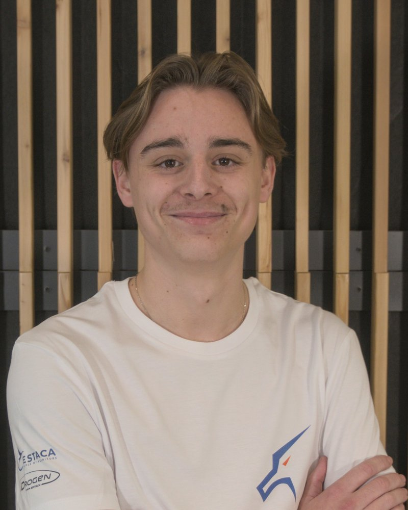
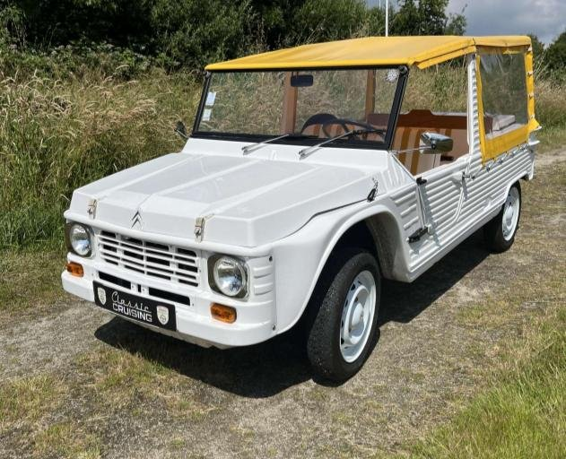

Portfolio 2026
Axel Plais
Élève-ingénieur en 3e année à l’ESTACA, filière automobile.
Ce qui me motive : la mobilité durable, la motorisation et la gestion de projet.
« Nous n’héritons pas de la terre de nos ancêtres, nous l’empruntons à nos enfants. »

Portrait, Laval, 2026
Mettre l’ingénierie au service d’une automobile plus propre.
Le transport pèse lourd dans les émissions, et l’automobile doit changer sans perdre ce qui la rend passionnante : la mécanique, la course, le plaisir de conduire. C’est ce défi qui m’a conduit à l’ESTACA, puis au projet HYCE, où l’on fait rouler un moteur thermique à l’hydrogène.
Demain, je veux travailler sur les motorisations à faibles émissions, de la conception jusqu’aux essais, au sein d’une équipe qui fait avancer le secteur.
Ce que j’apporte
Compétences techniques
- Étude et dimensionnement d’un système d’injection hydrogène
- Préparation d’un moteur en vue d’un rétrofit
- Montage de sous-ensembles mécaniques selon une gamme
- Conception assistée par ordinateur
Qualités
- Travail en équipe, communication, répartition des tâches
- Rigueur
- Créativité
- Adaptabilité
Logiciels
- Solidworks
- Matlab, Simulink
- Lotus Engineering
- 3DExperience, Pack Office
Langues
- Français, langue maternelle
- Anglais, B2
- Espagnol, A2
Centres d’intérêt
- Badminton en club depuis 8 ans
- Sport mécanique : suivi des compétitions, présence sur circuit
- Sciences, innovation, actualité
Des études au métier d’ingénieur
-
2024 à 2025Marseille
Classe préparatoire PCSI
Lycée Jean Perrin
Une année intense de mathématiques, de physique et de sciences de l’ingénieur, qui m’a donné une base scientifique solide et une vraie rigueur de travail.
Classé 7e sur 58 au premier semestre, 11e sur 58 au second.
-
2025 à 2029Laval
ESTACA, cycle ingénieur
École d’ingénieurs spécialisée dans les transports, filière automobile
L’école prolonge cette formation scientifique et m’ouvre trois portes, détaillées plus bas :
-
Fév. 2025à aujourd’hui
Projet HYCE, pôle moteur
HYCE réunit une trentaine d’étudiants de l’ESTACA qui rétrofitent une voiture de course vers un moteur thermique à hydrogène, pour démocratiser cette technologie par le sport automobile.
- Comparaison des modes d’injection et choix de l’injection indirecte
- Calcul du débit requis et sélection des injecteurs
- Pilotage de l’injection par le calculateur
- Préparation du moteur Renault MR18 pour sa conversion
Prix Coup de Cœur du Jury, finale SIA Powertrain.
Photo de la voiture HYCE à venir -
Oct. 2025à aujourd’hui
Projet HYCE, pôle sponsoring
Membre d’octobre 2025 à juillet 2026, responsable du pôle depuis août 2026
- Stratégie de sponsoring et pilotage de la prospection
- Coordination de l’équipe du pôle
- Négociation des partenariats financiers et techniques
- Inscription aux concours étudiants
-
Juil. 2026Cassis, 4 semaines
Stage d’exécution, Méhari Club Cassis
Un mois sur la ligne de montage de MCC Automotive, qui refabrique des Méhari et des 2CV avec les outillages d’origine Citroën.
- Montage de la base des véhicules, partie thermique et châssis, sur Méhari et sur le modèle Eden
- Assemblage des sous-ensembles en suivant la gamme de montage
- Travail en binôme avec un technicien, avec des exigences de qualité et de cadence

Méhari assemblée à Cassis
-
ProjetsÀ l’ESTACA
Projets d’école